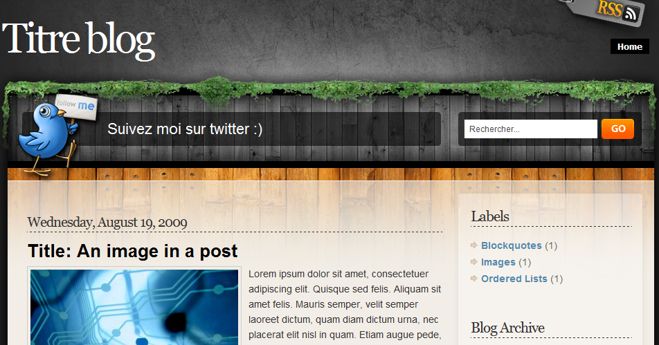
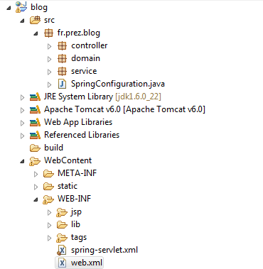
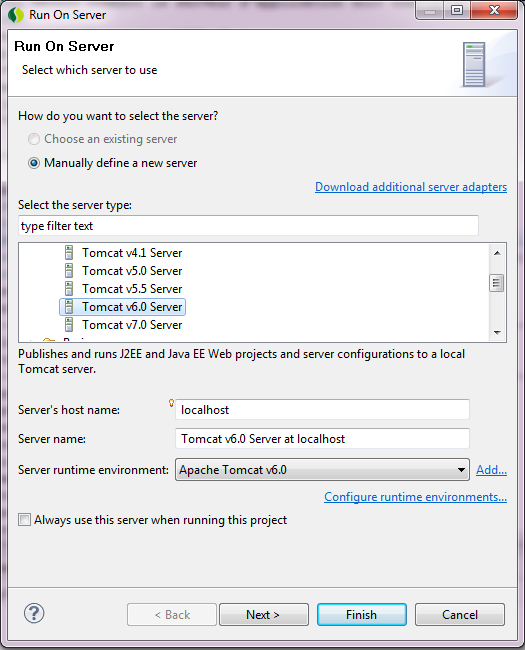
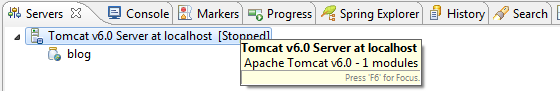
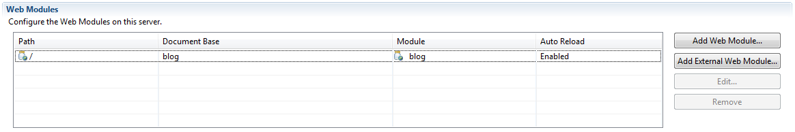
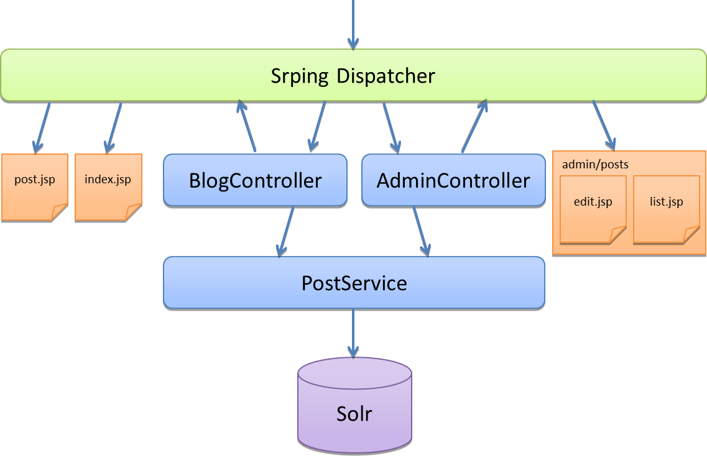

Nous allons utiliser ce template de projet afin de mettre en oeuvre les composants spring mvc.
Comme support, nous allons prendre la réalisation d'un blog.
La base de notre template est un template HTML existant
Après simplification et localisation du HTML, les fichiers jsp ont été préparés.
Pour eclipse, si possible, prendre la distribution SpringSource Tool Suite
Il faut installer tomcat 6 où l'on souhaite. Un jdk 6 est requis.
Le projet a été créé en utilisant le menu File > New... > Dynamic Web Project
Sous eclipse, le projet ressemble à l'arborescence suivante
Il décrit comment le serveur d'application doit configurer et déployer les composants.
<?xml version="1.0" encoding="UTF-8" ?> <web-app ...> <display-name>blog</display-name> <filter> <filter-name>encodingFilter</filter-name> <filter-class> org.springframework.web.filter.CharacterEncodingFilter </filter-class> <init-param> <param-name>encoding</param-name> <param-value>UTF-8</param-value> </init-param> <init-param> <param-name>forceEncoding</param-name> <param-value>true</param-value> </init-param> </filter> <filter-mapping> <filter-name>encodingFilter</filter-name> <url-pattern>/*</url-pattern> </filter-mapping> <servlet> <servlet-name>spring</servlet-name> <servlet-class>org.springframework.web.servlet.DispatcherServlet</servlet-class> <load-on-startup>1</load-on-startup> </servlet> <servlet-mapping> <servlet-name>spring</servlet-name> <url-pattern>/</url-pattern> </servlet-mapping> </web-app>
Notre application s'appelle blog et définit le dispatcher spring.
le fichier spring-servlet.xml décrit les beans et services chargés dans le contexte spring.
<context:annotation-config /> <context:component-scan base-package="fr.prez.blog" /> <aop:aspectj-autoproxy /> <!-- Support pour les annotations spécifiques au mvc --> <mvc:annotation-driven /> <!-- Forwarde les demandes de fichiers statiques vers la servlet par défaut du conteneur --> <mvc:default-servlet-handler /> <!-- Configure la technologie de templating --> <bean id="jspViewResolver" class="org.springframework.web.servlet.view.InternalResourceViewResolver"> <property name="viewClass" value="org.springframework.web.servlet.view.JstlView" /> <property name="prefix" value="/WEB-INF/jsp/" /> <property name="suffix" value=".jsp" /> </bean>
Il contient les éléments de base d'une application web avec spring.
Nous définirons tous les autres éléments via le scan de composants.
On peut lancer le conteneur tomcat avec le menu Run > Run as... > Run on Server.
Ce menu est également accessible en menu contextuel (click droit) sur le projet.
Un click sur Finish et le serveur démarre.
Pour que les liens en absolu fonctionnent dans notre application, nous allons déployer notre application dans le contexte root.
Sous eclipse, il faut double cliquer sur le serveur tomcat avec d'accéder à sa configuration.
Dans l'onglet modules, il est possible de spécifier le contexte de déploiement.
Il faut ensuite sauver cette configuration et redémarrer le serveur tomcat afin que cela soit pris en compte.
Normalement la page de home devrait désormais répondre
Voici un aperçu rapide des composants en place pour ce blog.
Pour le moment, le modèle est constitué de la fr.prez.blog.domain.Post.
Nous rajouterons la classe Comment plus tard.
La configuration de solr est dans le home de solr, dans le répertoire conf.
Grâce au component-scan, spring trouve le bean de configuration SpringConfiguration qui définit le SolrServer.
Le service PostService utilise l'api solrj afin d'attaquer l'index solr.
Il permet de lister, ajouter, éditer et supprimer des Posts.
Il forward vers les vues edit.jsp et list.jsp quand cela est nécessaire.
Le TagsPropertyEditor permet de gérer la conversion entre une List de String et une String (liste de tags séparés par des virgules).
Pour le moment, il gère la page d'index et la page de détails d'un Post.
Il forward vers les fichiers jsp index.jsp et post.jsp.
Ce sont les blocs réutilisables entre les pages.
Changer le titre du blog ("Titre blog") dans le head et dans la page.
Changer le compte twitter dans le header.
Comme nous utilisons solr, la page de recherche est assez peu différente de la page d'index.
Ajoutez une méthode search(String text) dans le PostService.
public List<Post> search(String text) throws SolrServerException
Cette méthode repose sur la méthode list(SolrQuery query).
Ajoutez une méthode search(String query, Model model) dans le PostController.
@RequestMapping("/recherche")
public String search(String query, Model model) throws SolrServerException
Cette méthode va utiliser la méthode que nous avons ajouté au service.
Elle doit rediriger vers la jsp /WEB-INF/jsp/search.jsp qui n'existe pas pour le moment.
Trouvez et modifier la boîte de recherche afin qu'elle pointe vers notre méthode du controleur.
Dupliquez la page index.jsp afin de créer la page search.jsp.
Afin d'afficher la requête en cours, il faut penser à passer l'attibut query dans le model depuis le controleur.
Le code suivant dans la jsp permet de l'afficher.
<div>Votre recherche : ${fn:escapeXml(query)}</div>
Actuellement, tout le monde peut accéder aux pages d'administration.
Nous allons utliser spring-security afin de sécuriser ces pages.
Ajoutez le filtre org.springframework.web.filter.DelegatingFilterProxy qui intercepte toutes les requêtes (/*).
Ce filtre doit se nommer (filter-name) springSecurityFilterChain.
Afin de configurer spring security, il faut ajouter le fichier spring-security.xml dans WEB-INF.
<?xml version="1.0" encoding="UTF-8"?>
<beans:beans xmlns="http://www.springframework.org/schema/security"
xmlns:beans="http://www.springframework.org/schema/beans"
xmlns:xsi="http://www.w3.org/2001/XMLSchema-instance"
xsi:schemaLocation="http://www.springframework.org/schema/beans
http://www.springframework.org/schema/beans/spring-beans-3.0.xsd
http://www.springframework.org/schema/security
http://www.springframework.org/schema/security/spring-security-3.0.3.xsd">
<http auto-config="true">
<intercept-url pattern="/admin/**" access="ROLE_ADMIN"/>
</http>
<authentication-manager>
<authentication-provider>
<user-service>
<user name="admin" password="admin" authorities="ROLE_ADMIN" />
</user-service>
</authentication-provider>
</authentication-manager>
</beans:beans>
En pratique en entreprise, l'authentification repose sur des bases de données, des annuaires ldap ou même des protocoles comme OpenID (comme google accounts).
Il ne reste plus qu'a charger cette configuration au démarrage du serveur.
Cela se fait en rajoutant le listener suivant dans le web.xml.
<listener> <listener-class>org.springframework.web.context.ContextLoaderListener</listener-class> </listener> <context-param> <param-name>contextConfigLocation</param-name> <param-value>/WEB-INF/spring-security.xml</param-value> </context-param>
Par défaut, spring security exécute l'action de logout via l'url /j_spring_security_logout
Il est possible de le changer via la configuration suivante
<logout logout-url="/logout" />
La librairie le tags de spring security est utilisable dans les jsp avec la déclaration suivante
<%@ taglib prefix="sec" uri="http://www.springframework.org/security/tags" %>
En s'inspirant de la documentation, ajoutez un lien de logout si la personne est connectée.
L'authentification de type BASIC est souvent pratique dans le cas de services B2B.
Avec un browser, c'est le navigateur qui négocie l'authentification et propose un formulaire de login.
Afin de ne proposer que l'authentification de type BASIC il suffit de retirer l'attribut auto-config et d'ajouter le tag <http-basic />
Un effet de bord est que le bouton logout ne semble plus fonctionner.
Le rss (Really Simple Syndication) est un format xml pour la syndication décrivant une liste d'éléments.
<?xml version="1.0" encoding="iso-8859-1"?>
<rss version="2.0">
<channel>
<title>Mon site</title>
<description>Ceci est un exemple de flux RSS 2.0</description>
<lastBuildDate>Sat, 07 Sep 2002 00:00:01 GMT</lastBuildDate>
<link>http://www.example.org</link>
<item>
<title>Actualité N°1</title>
<description>Ceci est ma première actualité</description>
<pubDate>Sat, 07 Sep 2002 00:00:01 GMT</pubDate>
<link>http://www.example.org/actu1</link>
</item>
</channel>
</rss>
La double force du rss est sa simplicité et son extensibilité.
ROME (RSS and Atom Utilities) est une librarie java qui permet de générer des RSS et des flux Atom.
De son coté spring MVC offre un support de premier ordre pour la génération de RSS via ROME.
Le lien vers le rss dans le header est /rss. On déclare donc la méthode suivante dans le BlogController.
@RequestMapping("/rss")
@ResponseBody
public Channel rss() throws SolrServerException {
...
}
Il suffit de créer et remplir correctement le modèle représentant un Channel RSS et spring s'occupe de la conversion en xml.
Channel channel = new Channel();
channel.setFeedType("rss_2.0");
channel.setTitle("Mon flux rss");
channel.setDescription("Description");
channel.setLink("http://localhost:8080/rss");
// fill items
return channel;
Si l'objet Channel est correctement rempli, on obtient un contenu xml qui ressemble à l'exemple suivant.
<?xml version="1.0" encoding="UTF-8"?>
<rss version="2.0">
<channel>
<title>Mon flux rss</title>
<link>http://localhost:8080/rss</link>
<description>Description</description>
<item>
<title>un titre méé</title>
<link>http://localhost:8080/8d51bb75-cb02-4e43-9a07-0ee43c8c2d31</link>
<pubDate>Sun, 10 Oct 2010 08:00:00 GMT</pubDate>
<author>moi</author>
</item>
</channel>
</rss>
Il est possible aussi simplement de retourner du json grâce à la librairie Jackson présente dans le classpath.
@RequestMapping("index.json")
@ResponseBody
public List<Post> indexJson(Model model) throws SolrServerException {
return postService.index();
}
Spring et jackson s'occupent automatiquement de la conversion.
Comment ferait on afin d'ajouter le support pour jsonp ?
La recherche par tag permettrait de faire fonctionner les liens dans le bloc "Tags".
Il suffit de modifier la méthode search du BlogController.
public String search(String query, String tag, Model model)
Le PostService doit aussi supporter ce paramètre supplémentaire.
public Listsearch(String text, String tag)
Son implémentation doit être modifiée afin de supporter ce nouveau paramètre.
if (StringUtils.isEmpty(text)) {
text = ALL_POSTS;
}
SolrQuery query = new SolrQuery(text);
if (StringUtils.isNotEmpty(tag)) {
query.addFilterQuery("tags:" + tag);
}
query.addSortField("date", ORDER.desc);
query.setRows(5);
return list(query);
La méthode permettant de récupérer tous les tags utilisés est la suivante.
public List<Count> findTags() throws SolrServerException {
SolrQuery query = new SolrQuery(ALL_POSTS);
query.addFacetField("tags");
return solrServer.query(query).getFacetField("tags").getValues();
}
Comment peut on injecter cette liste dans tous les Models et afficher les 5 premier tags dans le fichier tags.tag ?
Si on voulait gérer les commenaires dans les billets, quels seraient les opérations à ajouter ?
Comment pourrait on injecter la liste d'archives dans toutes les vues ?
Comment pourrait on paginer les pages de listing de billets ?